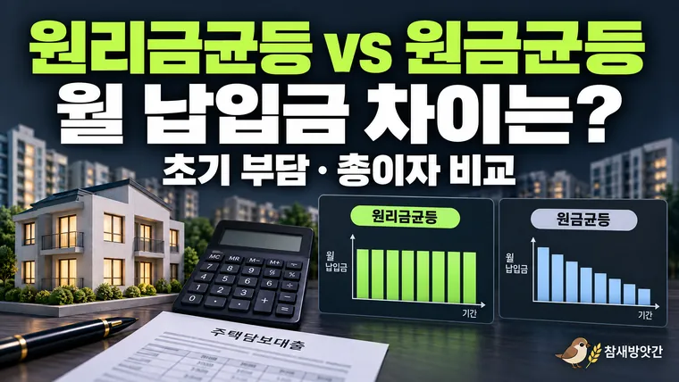

주택담보대출 원리금균등과 원금균등 상환 방식의 차이 알아보기
2억 원을 연 4%로 20년 갚으면 원리금균등은 월 약 121만 원, 원금균등은 첫 달 약 150만 원입니다. 두 상환 방식의 차이를 정리합니다.

아파트를 구입하면서 주택담보대출을 알아보다 보면 원리금균등상환과 원금균등상환이라는 용어를 접하게 됩니다. 두 방식 모두 빌린 돈과 이자를 나누어 갚는다는 공통점이 있지만, 매달 납부하는 금액과 전체 대출 기간에 발생하는 이자에는 차이가 있습니다.
예를 들어 같은 금액을 동일한 금리와 기간으로 빌리더라도 어떤 상환 방식을 선택했는지에 따라 첫 달 납입금이 달라질 수 있습니다. 시간이 흐르면서 남아 있는 대출 원금이 줄어드는 속도 역시 서로 다릅니다.
따라서 주택담보대출을 이해할 때는 단순히 금리가 몇 퍼센트인지 확인하는 것에서 그치지 않고, 상환 방식에 따른 월 납입금의 구조를 함께 살펴보는 것이 좋습니다.
이번 글에서는 주택담보대출의 대표적인 두 가지 상환 방식인 원리금균등상환과 원금균등상환의 차이를 알아보고, 가상의 대출 사례를 통해 계산 결과가 어떻게 달라지는지 살펴보겠습니다.
1. 원리금균등상환은 매달 일정한 금액을 납부하는 방식
원리금균등상환은 대출 원금과 이자를 합한 금액을 매월 동일하게 납부하도록 설계한 상환 방식입니다.
여기서 원리금은 빌린 돈인 원금과 대출 이용에 따라 발생하는 이자를 합친 금액을 의미합니다.
원리금균등상환의 가장 큰 특징은 금리와 상환 조건이 변하지 않는다는 가정하에 매달 납부하는 원리금 합계가 일정하다는 점입니다.
다만 매월 납입금 안에서 원금과 이자가 차지하는 비중은 계속 달라집니다.
초기에는 이자 비중이 상대적으로 높다
대출을 처음 실행했을 때는 아직 갚지 않은 원금이 많기 때문에 이자 부담도 상대적으로 큽니다.
시간이 지나면서 원금을 조금씩 상환하면 남아 있는 대출 잔액이 감소하고, 이에 따라 매달 발생하는 이자도 줄어듭니다.
원리금균등상환에서는 월 납입금이 일정하게 유지되므로 이자가 줄어든 만큼 원금 상환 비중이 증가하는 구조입니다.
예를 들어 매달 약 100만 원을 납부한다고 가정하면 초기에는 이자가 차지하는 비중이 크지만, 대출 만기가 가까워질수록 원금 상환 비중이 커지게 됩니다.
이러한 방식은 월별 납입금이 일정하다는 점에서 가계 지출을 계획할 때 이해하기 쉽다는 특징이 있습니다.
다만 변동금리 상품이라면 금리 변경에 따라 월 납입금이 다시 계산될 수 있으며, 거치기간이나 기타 대출 조건이 있는 경우에도 실제 납입 구조는 달라질 수 있습니다.
2. 원금균등상환은 매달 같은 원금을 갚는 방식
원금균등상환은 대출 원금을 전체 상환 기간으로 나누어 매월 동일한 원금을 갚는 방식입니다.
여기에 남아 있는 대출 잔액을 기준으로 계산한 이자를 더해 매월 납부하게 됩니다.
원리금균등상환과 가장 큰 차이는 매달 납부하는 원금이 일정하다는 것입니다.
기본적인 계산 구조는 다음과 같습니다.
매월 상환 원금 = 대출 원금 ÷ 전체 상환 개월 수
매월 납입금 = 매월 상환 원금 + 해당 월의 이자
예를 들어 1억 2천만 원을 10년 동안 원금균등 방식으로 상환한다고 가정하겠습니다.
10년은 총 120개월이므로 매달 갚는 원금은 다음과 같습니다.
120,000,000원 ÷ 120개월 = 1,000,000원
따라서 매달 100만 원의 원금을 상환하고, 여기에 남아 있는 원금에 대한 이자를 추가로 납부하는 구조입니다.
시간이 지날수록 월 납입금이 감소하는 이유
원금균등상환에서는 매달 동일한 원금을 갚기 때문에 대출 잔액이 일정한 속도로 줄어듭니다.
이자는 남아 있는 대출 잔액을 기준으로 계산하므로 시간이 흐를수록 이자 부담도 감소합니다.
결과적으로 매달 납부하는 원금은 같지만 이자가 줄어들면서 전체 월 납입금은 점차 감소하게 됩니다.
이러한 구조 때문에 원금균등상환은 일반적으로 원리금균등상환보다 초기 월 납입금이 높게 나타납니다.
반면 동일한 대출 원금과 금리, 상환 기간을 가정하면 원금이 더 빠르게 줄어들기 때문에 전체 대출 기간에 발생하는 총이자는 상대적으로 적은 편입니다.
3. 같은 대출금이라도 상환 방식에 따라 얼마나 달라질까?
두 상환 방식의 차이를 보다 쉽게 이해하기 위해 동일한 조건의 가상 대출 사례를 살펴보겠습니다.
다음과 같은 조건을 가정하겠습니다.
| 구분 | 대출 조건 |
|---|---|
| 대출 원금 | 2억 원 |
| 연이율 | 4% |
| 상환 기간 | 20년 |
| 상환 개월 수 | 240개월 |
| 금리 유형 | 고정금리 가정 |
| 거치기간 | 없음 |
위 조건에서 원리금균등상환과 원금균등상환을 각각 적용하면 월 납입금과 총이자에 차이가 발생합니다.
원리금균등상환 계산 결과
2억 원을 연 4% 금리로 20년 동안 원리금균등 방식으로 상환하면 매달 납부하는 금액은 약 121만 2천 원입니다.
금리와 대출 조건이 변하지 않는다고 가정하면 만기까지 비슷한 금액을 매달 납부하게 됩니다.
초기에는 이자 비중이 높고, 시간이 흐를수록 원금 상환 비중이 증가합니다.
원금균등상환 계산 결과
같은 조건에서 원금균등상환을 적용하면 매달 상환하는 원금은 다음과 같습니다.
200,000,000원 ÷ 240개월 = 약 833,333원
여기에 첫 달 이자를 더해야 합니다.
첫 달 이자를 연이율을 12로 나눈 단순 월 이율로 계산하면 다음과 같습니다.
200,000,000원 × 4% ÷ 12 = 약 666,667원
따라서 첫 달 납입금은 약 150만 원입니다.
이후에는 대출 잔액이 감소하면서 매달 납부하는 이자도 줄어들게 됩니다.
두 상환 방식 비교표
| 비교 항목 | 원리금균등상환 | 원금균등상환 |
|---|---|---|
| 대출 원금 | 2억 원 | 2억 원 |
| 연이율 | 4% | 4% |
| 상환 기간 | 20년 | 20년 |
| 첫 달 납입금 | 약 121만 원 | 약 150만 원 |
| 월 납입금 변화 | 일정하게 유지 | 점차 감소 |
| 총이자 | 약 9,087만 원 | 약 8,033만 원 |
※ 위 금액은 고정금리, 매월 동일한 기간, 중도상환 및 별도 수수료가 없는 상황을 가정한 이론적 계산 결과입니다. 실제 금융기관의 이자 계산 방식과 납입일, 원 단위 처리 등에 따라 차이가 발생할 수 있습니다.
표를 보면 원금균등상환은 초기 납입금이 상대적으로 높지만 전체 기간의 총이자는 더 적게 나타납니다.
반면 원리금균등상환은 초기 월 납입금 부담이 상대적으로 낮고, 월별 납입금이 일정하다는 차이가 있습니다.
어느 방식이 무조건 더 좋다고 판단하기보다는 두 방식의 계산 구조가 어떻게 다른지 이해하는 것이 중요합니다.
4. 주택담보대출 계산기를 활용할 때 확인해야 할 사항
주택담보대출은 대출 원금과 금리, 상환 기간에 따라 계산 결과가 크게 달라질 수 있습니다.
따라서 대출 상품을 비교하기 전에 계산기를 이용해 동일한 조건에서 상환 방식별 월 납입금이 어떻게 달라지는지 확인하면 도움이 됩니다.
계산기를 사용할 때는 다음 항목을 구분해서 입력하는 것이 좋습니다.
대출 원금과 주택 가격은 다르다
주택담보대출 계산기에 입력하는 대출 원금은 아파트의 전체 매매가격이 아니라 실제로 빌리는 금액입니다.
예를 들어 5억 원의 아파트를 구입하면서 2억 원을 대출받는 상황이라면 계산기에 입력할 대출 원금은 2억 원입니다.
연이율과 월 이율 구분하기
대출 상품에서 안내하는 금리는 일반적으로 연이율을 기준으로 표시합니다.
월별 이자를 단순 계산할 때는 연이율을 12로 나누어 월 이율로 환산할 수 있습니다.
다만 실제 금융기관에서는 약정 조건과 이자 계산 기간에 따라 일할 계산 등을 적용할 수 있으므로 계산기 결과와 실제 청구 금액에는 차이가 발생할 수 있습니다.
총이자와 월 납입금을 함께 비교하기
대출 계산기를 사용할 때 월 납입금만 확인하는 경우가 있습니다.
하지만 상환 방식의 차이를 이해하려면 전체 기간에 발생하는 총이자도 함께 살펴보는 것이 좋습니다.
원리금균등상환과 원금균등상환은 초기 납입금과 원금 감소 속도가 다르므로 동일한 조건에서도 총이자가 다르게 계산됩니다.
따라서 계산기에서 두 방식의 월 납입금과 총이자를 각각 확인하면 상환 구조를 보다 쉽게 이해할 수 있습니다.
마무리: 상환 방식에 따라 월 납입금과 총이자가 달라진다
원리금균등상환과 원금균등상환은 주택담보대출에서 대표적으로 사용되는 두 가지 상환 방식입니다.
원리금균등상환은 원금과 이자를 합한 월 납입금이 일정하게 유지되는 구조이며, 원금균등상환은 매달 동일한 원금을 갚으면서 이자 부담이 점차 줄어드는 방식입니다.
동일한 대출 조건에서는 일반적으로 원금균등상환의 초기 납입금이 더 높지만, 전체 기간에 발생하는 총이자는 상대적으로 적게 나타납니다.
주택담보대출을 알아볼 때는 금리뿐 아니라 상환 방식과 대출 기간을 함께 확인하고, 계산기를 통해 월별 납입금이 어떻게 달라지는지 비교해 보는 것이 좋습니다.
다음 글에서는 대출 기간을 10년, 20년, 30년으로 설정했을 때 월 상환액과 총이자가 달라지는 원리를 자세히 살펴보겠습니다.
- 금융감독원 금융소비자정보포털 파인(FINE): 금융상품 및 대출 관련 정보
- 금융감독원 금융상품한눈에: 금융상품 비교 정보
- 한국주택금융공사: 주택담보대출 상품 및 상환 방식 안내
- 각 금융기관의 대출 상품설명서 및 약정서
※ 본문은 주택담보대출의 일반적인 상환 구조를 이해하기 위한 정보성 자료입니다. 계산 사례는 고정금리와 일정한 상환 조건을 가정한 예시이며, 실제 대출의 월 납입금과 총이자는 금융기관의 약정 조건에 따라 달라질 수 있습니다.
이 글의 계산 사례는 고정금리와 일정한 상환 조건을 가정한 2026년 10월 기준 예시입니다. 실제 대출의 월 납입금과 총이자는 금융기관의 약정 조건에 따라 달라질 수 있으니 계약 전에 최신 조건을 확인하세요. 계산 결과는 참고용입니다.
자주 묻는 질문
금리와 상환 조건이 변하지 않는다는 가정하에서는 원금과 이자를 합한 월 납입금이 일정하게 유지됩니다. 다만 변동금리 상품이나 금리 재산정 조건이 있는 경우에는 실제 월 납입금이 달라질 수 있습니다.
원금균등상환은 전체 대출 원금을 상환 개월 수로 나누어 매달 동일한 원금을 갚는 방식입니다. 대출 초기에는 남아 있는 원금이 많아 이자도 상대적으로 높기 때문에 첫 달 납입금이 크게 나타납니다.
대출 원금과 금리, 상환 기간이 동일하고 중도상환 등의 변수가 없다면 일반적으로 원금균등상환의 총이자가 더 적습니다. 원금을 상대적으로 빠르게 상환하여 이자가 계산되는 잔액이 더 빨리 감소하기 때문입니다.
같은 조건이면 원리금균등상환의 첫 달 납입금이 더 적습니다. 2억 원, 연 4%, 20년이면 첫 달 약 121만 원과 약 150만 원으로 차이가 납니다.